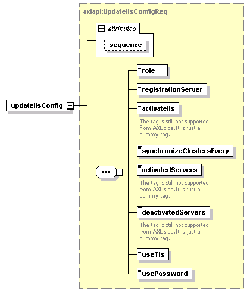

| diagram |  | ||||||||||||
| namespace | http://www.cisco.com/AXL/API/10.5 | ||||||||||||
| type | axlapi:UpdateIlsConfigReq | ||||||||||||
| properties |
|
||||||||||||
| children | role registrationServer activateIls synchronizeClustersEvery activatedServers deactivatedServers useTls usePassword | ||||||||||||
| attributes |
|
||||||||||||
| source | <xsd:element name="updateIlsConfig" type="axlapi:UpdateIlsConfigReq"/> |